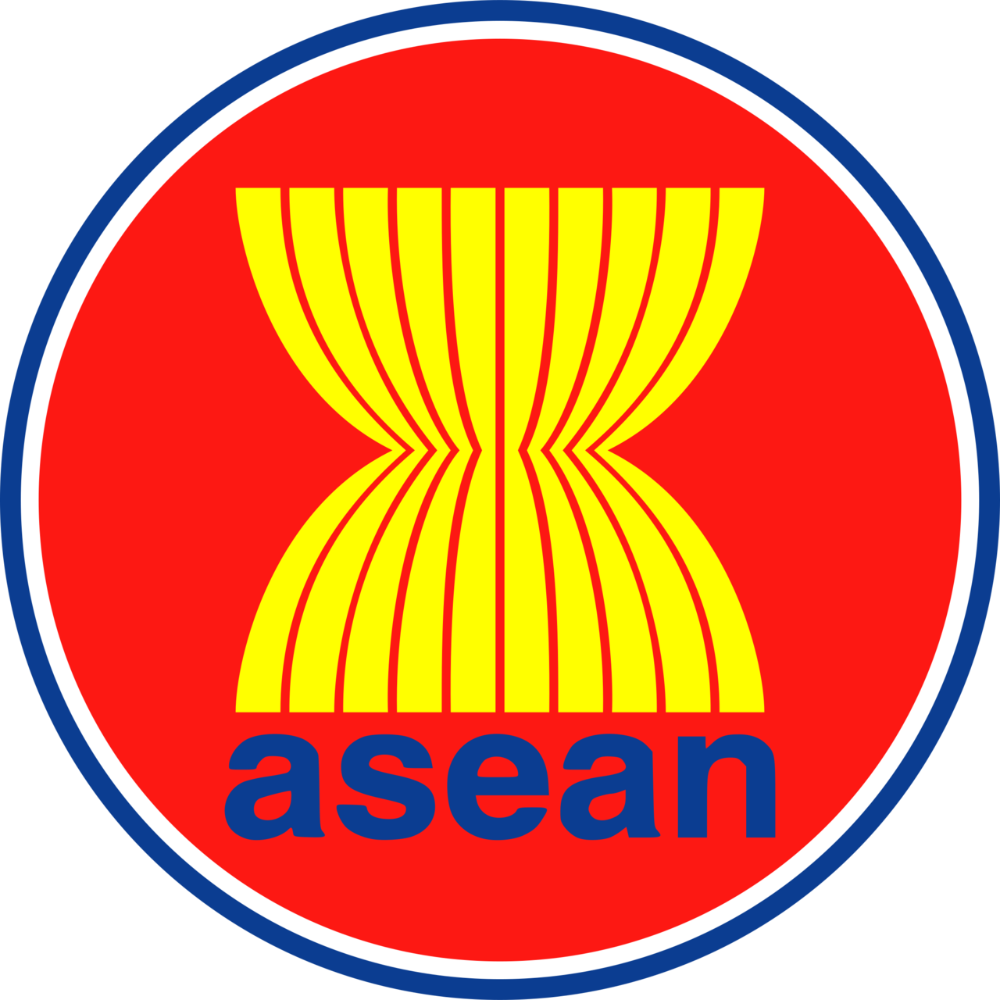
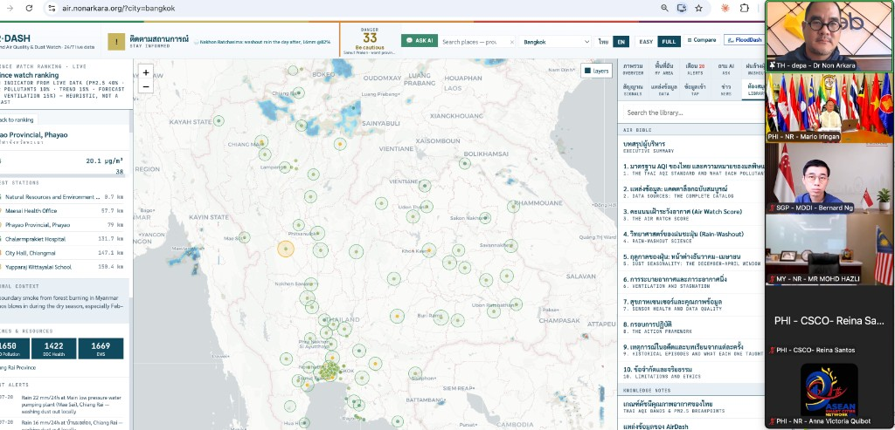
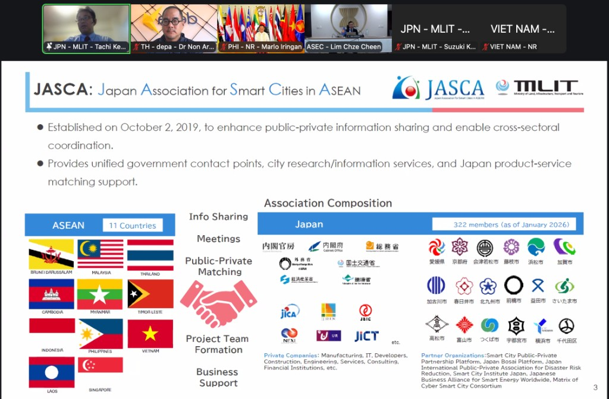
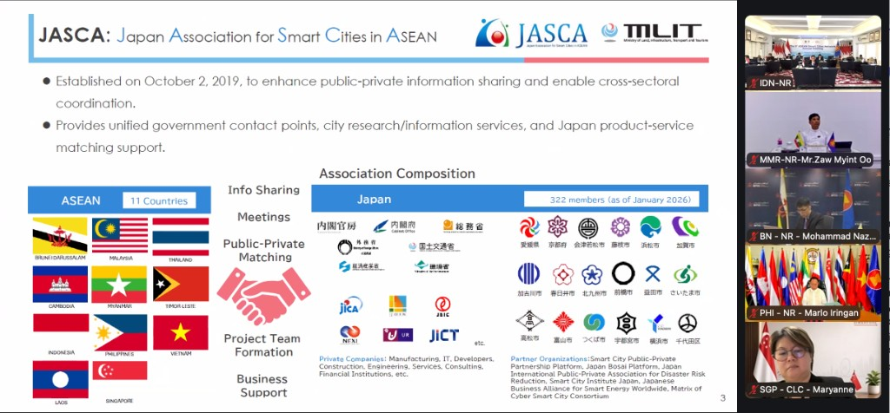
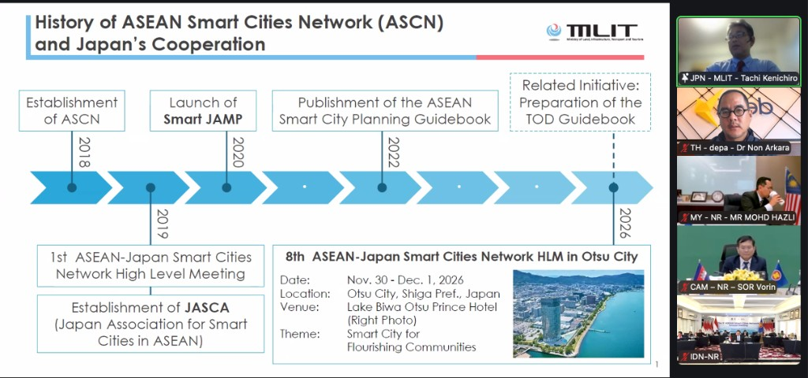
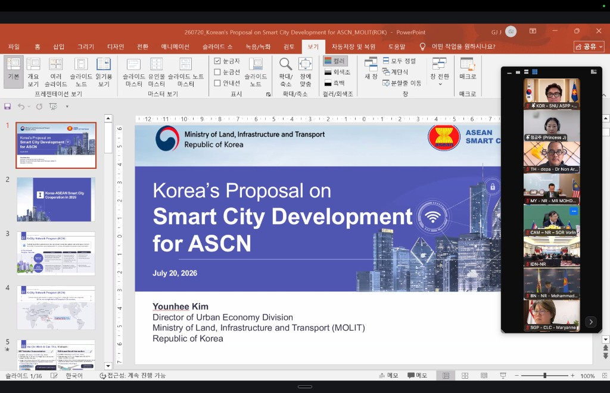

Why this platform exists
Evidence baseLoading official report dataset…

ASCNPerformance ReviewASEAN Smart Cities Network
134 projects tracked since 2018. Not one public platform has asked how the network is performing against its own goals. This one does.

The Philippines chaired. Twenty-five cities joined. Three new members. Japan, Korea, UN-Habitat, and a finance pilot all presented.
Why this platform exists
Overview · 9th Annual Meeting
On 20 July 2026 the ASEAN Smart Cities Network met on a video call. The Philippines ran it. Twenty-five cities were on the line. Draft record, 13 August 2026. Not yet adopted.
The chair was Marlo L. Iringan, Undersecretary for Local Government at the Philippines’ Department of the Interior and Local Government. He read opening remarks from Interior Secretary Juanito Victor C. Remulla: cities are where a policy becomes a service someone can use. Technology is a tool, not the destination. The Philippines wants a joint statement that pushes Sustainable Development Goal 11 — sustainable cities and communities — by 2030, and that turns the 2026–2035 action plan into work.
In the room, on camera: national representatives from Brunei, Cambodia, Indonesia, Malaysia, and Myanmar. Officials standing in for Lao PDR, Singapore, Thailand, Viet Nam, and Timor-Leste. City officers from 25 member cities. The ASEAN Secretariat. Japan’s land ministry, Korea’s land ministry, UN-Habitat, and Evercity came to present.
Three cities had joined since last September: Denpasar and Semarang from Indonesia, and Dili from Timor-Leste. That is not yet in this platform’s city count of 38, which still follows the last published monitoring cycle.
Malaysia, last year’s chair, recapped 2025. A sustainable-urbanisation forum in Kuala Lumpur in August. The eighth annual meeting, an expert talk, an exhibition, and site visits in September. Adoption of the ASEAN Smart Cities Action Plan for 2026–2035. Another round of the Korea-funded professional programme at Seoul National University, including master’s scholarships.
This year’s work
The Philippines named three things it wants done in 2026.
First, that joint statement on SDG 11. The title changed after comments. Members were asked to send further comments or to agree by 31 July 2026. If nobody objects, the text stands. This draft is dated 13 August, after that date. The record does not say whether the statement has been adopted.
Second, Smart City Talks the next day, 21 July, also on a video call: cities swapping what actually worked, under the same 2030 theme.
Third, a second ASEAN Sustainable Urbanisation Report, paid for through Australia’s Aus4ASEAN Futures Initiative. An expert group already met on 7 July to check the aims, talk through regional trends, and start country profiles.
The network’s own rulebook is being rewritten to catch up with facts on the ground. Timor-Leste is now the 11th ASEAN member. Reporting is moving from the Joint Consultative Meeting to the Committee of Permanent Representatives. The 2026–2035 action plan and the 2045 community vision have to be written in. Singapore already sent comments. Everyone else was asked to send theirs by 31 July.
The Secretariat also tabled a spreadsheet for tracking the 2026–2035 action plan — a living document. Comments by the same date.
Twenty-five cities reported on their local plans. Two points landed. A smart city is not the city with the most machines. It is the city that uses them to run services and make life better. And flood work is shifting from reacting after the water comes to forecasting before it does.
Indonesia invited everyone to a waste-to-energy forum in Jakarta, 11–13 August 2026, inside its ninth international smart city expo. Mexico City will host the World Cities Summit Mayors Forum in September 2027. Mexico City won the Lee Kuan Yew World City Prize in 2024.
The 2026 monitoring report goes to ASEAN’s Coordinating Council in early November. It has to be finished in the first week of October. Members were asked to send their numbers by 14 August. The public version will not include the full project-by-project matrix. That is how it has been done before.
Japan


Japan’s land ministry listed five city projects for 2025–2026: modular housing in Phnom Penh; camera-based river monitoring in Jakarta; satellite flood monitoring in Makassar; a tourism travel platform in Manila; and a real-time crisis information platform in Timor-Leste.
Region-wide, Japan has started a transit-oriented development guidebook for ASEAN with Nikken Sekkei, Nikken Sekkei Research Institute, and Pacific Consultants. The point is a guide to building around stations that fits ASEAN legal, social, and economic conditions, and a city’s own history. It is meant for government officials, railway operators, developers, and academics.

Korea

Korea’s K-City Network has run 67 projects in 30 countries since 2020. This year it is in six ASEAN projects, including on-demand transport in Ho Chi Minh City and a city platform in Bandar Seri Begawan.
Korea is now talking about “AI cities”: using data from transport, safety, welfare, administration, and energy to predict problems and tailor services, with people still in charge. It is preparing AI-specialised pilots in both existing and new urban areas. That is Korea’s direction. It is not an ASCN decision.
Seoul National University floated a Phase 2 of the professional programme: less data-planning for working-level staff, more AI policy for working-level staff and senior decision-makers. A proposal. Not a vote.
Money, training, a ministerial idea
Evercity, funded through the ASEAN–Russia dialogue fund, wants to test a digital outcome bond in the region — green and climate finance that, in this design, is issued digitally and reported at project level. They are scoring which ASEAN countries are ready for that kind of instrument. Next they will come back to this network to check the scores and look for a pilot city.
UN-Habitat, under the Philippines’ ASEAN year, is running the second phase of the sustainable urbanisation project. Leadership training ran from March to July and is due to finish in October. Diagnostic reports for new cities are done; technical proposals are due in September. Phase 1 assistance is finished, with outputs also due in September. The second urbanisation report’s first draft is due in August. UN-Habitat wants extra help, inside the same budget, to turn those city proposals into something that can actually be built. They will come back through the Secretariat with the details.
Malaysia proposed lifting the network to ministerial level: an ASEAN Ministerial Meeting on Smart and Sustainable Cities. The paper came out in December 2025. Brunei, Indonesia, the Philippines, and Thailand have already commented. Indonesia and the Philippines said they support it. Indonesia’s caveat: ministers could meet every two years; the current annual meeting of national and city officials should stay as the working body, because that is where city plans get done. Malaysia will send a revised paper. No decision yet.
Singapore takes the chair in 2027. Date and place of the tenth meeting: later.
Homework
The meeting left a list. Deadlines are what the meeting set. This draft does not say what has been sent in since.
Source Draft summary record of the 9th ASCN Annual Meeting, 13 August 2026. Not yet adopted. Photo captions describe slides and screens from the call; those details are not in the written record. This page is not an official ASEAN publication.
History
Established at the 32nd ASEAN Summit in April 2018, the network has grown across eight chair years and five rounds of expansion.
The rotating chair & the persistent shepherd
The network in the field
Annual meetings
Member Cities
Projects
| City | Country | Project | Focus | Status |
|---|
Flagship investments
Framework & By-laws
Six focus areas
Governance
Capacity building
Partnerships & Finance
ASCN coordinates rather than funds. Bilateral partners, multilateral banks, and blended finance carry the projects.
Dialogue partners
Multilateral partners
Financing landscape
Programme networks
Resource · Aus4ASEAN Futures
Event · Jakarta · 26–27 November 2024
Insights
Four M&E cycles, 134 projects, 38 cities. What the official record shows — and what it doesn't.
Portfolio momentum — four cycles, 2022 to 2025
Focus area shifts — how priorities moved across four M&E cycles
Country participation — projects documented per cycle, 2022 → 2025
Country specialisation — portfolio mix by focus area, 2025
Projects per million city residents — 2025
Four patterns the record shows
Evidence quality — what can be verified row by row
Citizen impact, documented
Top investments — largest documented projects by value
What "completed" actually means — 18 projects self-defined as done
What ASCN measures — and what it doesn't
M&E maturity vs peer networks — 7 features, 5 systems
IMD Smart City Index 2024 — how ASEAN cities rank globally
ASCN in global context — beside India, the EU and China
ASCAP 2026–2035 alignment — where today's portfolio maps to tomorrow's pillars
The delivery gap — completed vs ongoing by focus area, 2025
Digital maturity vs ASCN activity — connectivity, rankings, project volume
5G readiness 2024 → 2030 — and the vendor geopolitics beneath it
The inclusivity test — Timor-Leste joins in 2026
Bilateral & multilateral commitments at scale — the ~170× gap
The research map — where ASCN scholarship comes from
Portfolio composition over four cycles — how the mix shifted
Country trajectories — who accelerated, who flatlined, 2022 → 2025
Project churn — unique projects, what survived four cycles?
Who finishes what — completion rates by country, 2025
Library & Open Data
Official documents
Knowledge library
Methodology & sources
External data sources
Methodology & limits